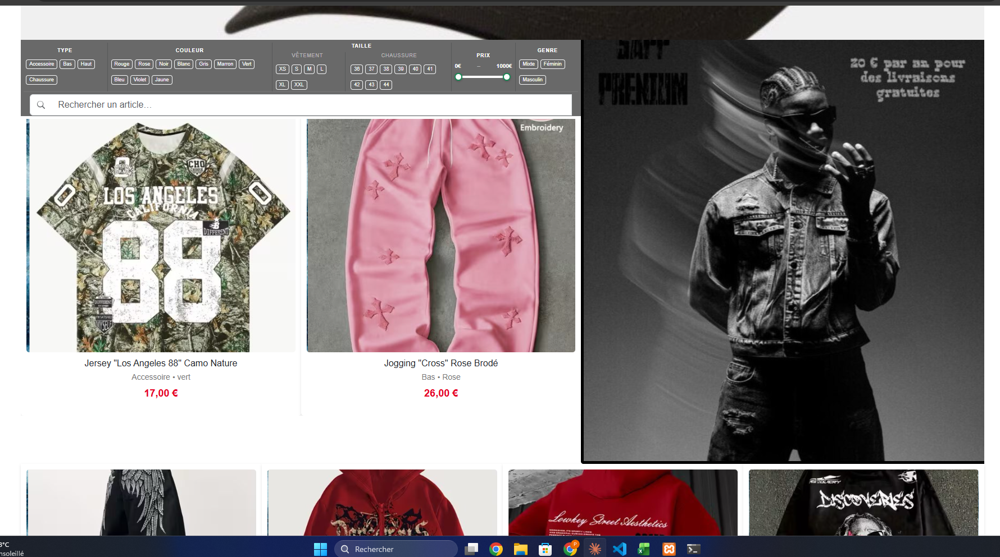

Plateforme de revente de vêtements entre particuliers, déclinée en version web et en application desktop.

Sapp est une marketplace entre particuliers pensée pour la revente de vêtements et d'accessoires : dépôt d'annonces avec photos, catalogue filtrable par type, couleur, taille et prix, et gestion des transactions.
Le projet existe en deux versions connectées à la même base de données : une interface web pour les utilisateurs, et une application desktop développée en Java pour la gestion côté administration.